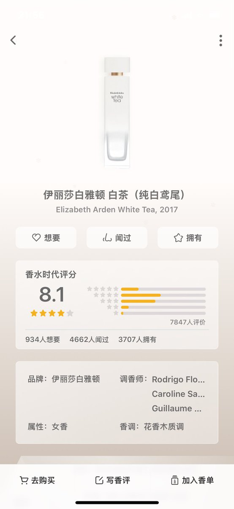

𝓒𝓻𝓮𝓪𝓶 𝓒𝓱𝓮𝓮𝓼𝓮
@LastTrouvaille
@Kietter387803 学到了！

kiehésitent
@Kietter387803
这个很久以前买过，不出所料是伊丽莎白雅顿白茶的模仿版本
其实更建议买原版，原版都很便宜，大概¥100能买50毫升
会有那种大堂的清洁感，这里面估计会添加更多的甜和小白花，橘子皮的味道，还有一点抹茶粉，甚至一点巧克力木头粉味道，会更加的符合审美 https://t.co/oOhA5gqLVR https://t.co/MDWntrYj8O